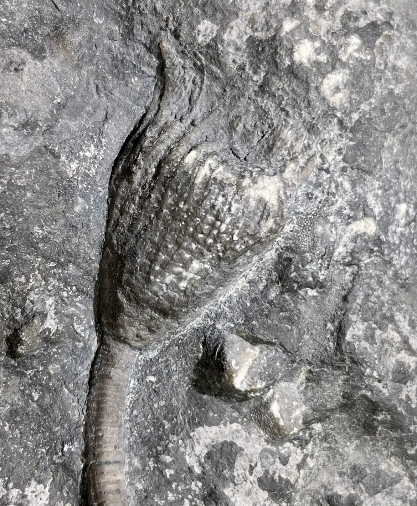
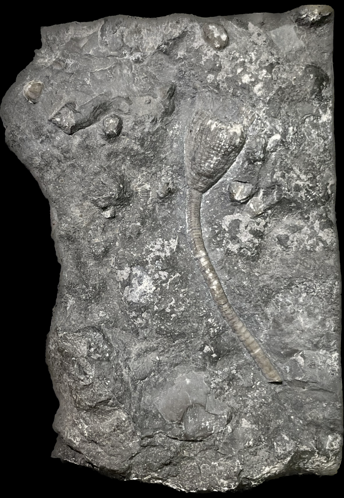

Cleiocrinus lepidotus
Ordovician
Bobcaygeon Formation
Ottawa, Ontario, Canada
Size: 3 cm crown
Cleiocrinus is a very unusual crinoid, perhaps entirely unique among crinoids in some aspects. For instance, apparently it has a very strange tegmen made from extensions of the arms and their ambulacra, instead of from interradial plates of the calyx as in all other crinoids. Something about that structural difference might be why the tegmen is very rarely found attached to the calyx, and until recently disarticulated tegmens of this genus were assumed to be fossils of a bryozoan.
|

|